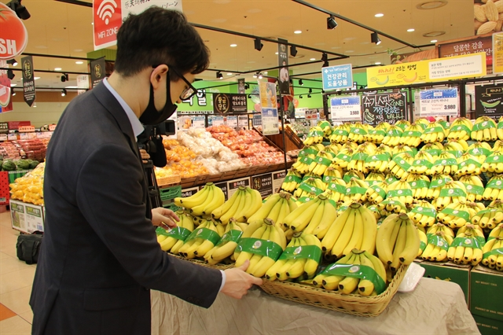
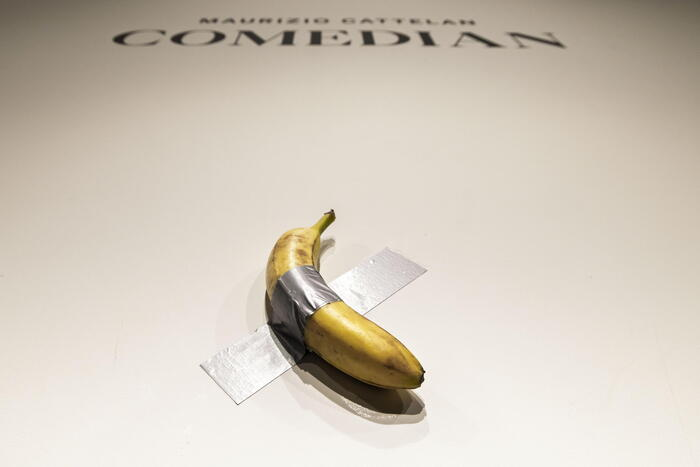
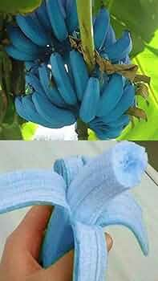
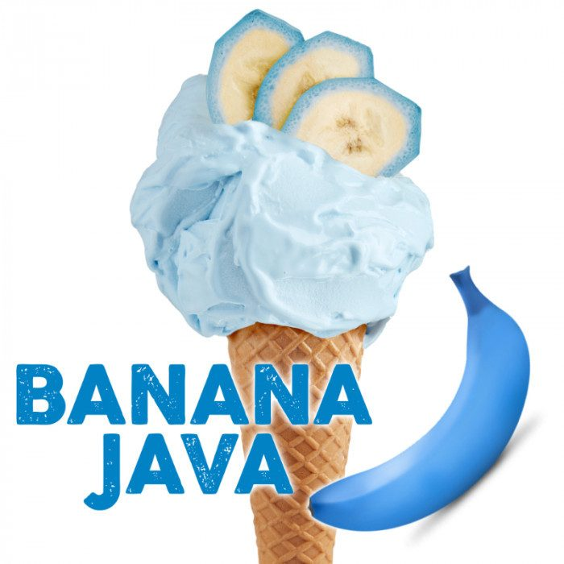

Types of bananas
Popular bananas
Cavendish banana

Plantain banana

Pisang Raja
Burro Banana
Buy some bananas!!!
We can go to Vietnam to buy yummy banana!
The most expensive banana
ContactsThe most expensive "banana" is the one featured in the conceptual artwork "Comedian" by Italian artist Maurizio Cattelan, which sold for $6.2 million at a Sotheby's auction in November 2024.
The price paid was for the conceptual artwork, not just the physical fruit itself. The artwork consists of a certificate of authenticity and detailed instructions for displaying a fresh banana with a single piece of duct tape on a wall. The banana itself was a regular one bought from a New York fruit stand for about 35 cents.
Three editions of the artwork were originally sold in 2019 for prices ranging from $120,000 to $150,000. The edition sold for $6.2 million had previously changed hands in a private sale.
The buyer, cryptocurrency entrepreneur Justin Sun, later ate the banana as a "unique artistic experience", highlighting that the value lies in the concept and the certificate of authenticity, not the perishable fruit. The owner simply replaces the banana every few days according to the artist's instructions to maintain the display.
Unusual Bananas
While the familiar yellow Cavendish banana dominates global markets, hundreds of other unusual banana varieties exist, differing in color, shape, size, and flavor profiles.
Here are some of the most notable unusual bananas:
About us
Blue Java (Ice Cream Banana): Known for its unique silvery-blue peel when unripe, this banana turns a pale yellow when ripe. Its flesh is white and creamy, and it is famous for having a flavor and consistency remarkably similar to vanilla ice cream. It is also more cold-tolerant than most varieties.
